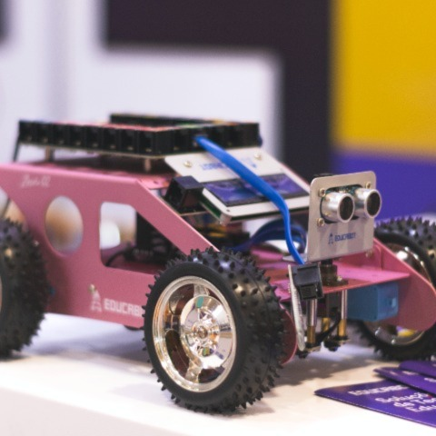

Fully automated cahracter reading using an OCR
We have identified that there is a huge delay in the identification process of suspected/getaway vehicles in SriLanka.This has been a major issue in the process of serving the justice to the victims.So we have used our knowledge onimage processing,IOT and python to come up with a solution.We have used a webcam to capture the image of the lisence plate.
After capturing the image of the license plate filters such as grayscale,bilateral filter would act upon it to smooth the image.Then that smoothed image would be canny edged using libraries such as opencv then the programme would find contours and after that it will find the rectangular contour as the license plate is most probably going to be a rectangel the programme would crop the rectangular contour and it will be read using tesseract ocr.
We have thought about the practicality of our solution and therefore we have used a raspberry pi 3 micro-controller as the computational device for this project.So, In a real world scenario a petroling police car would take the pictures of the license plates of the vehicles it is passing by.Then the programme would read the cahracters inside the captured plate and the it would serch for that particular license plate in the wanted vehicles database and if there's any match it will immidiatly send an email to the nearest police station.To achieve the above functionalities we have use python libraries such as smtplib and sqlite. .As for the further development of the project it is optimal to use a real-time viedio feed to the programme instead of images as well as an object detection algorithm such as YOLO with pre-trained weights along side a raspberry pi 4 micro-controller for better accuracy of the results.There are many real world scenarios that can use this system.Specially a parking garage can be fully automated using this sort of an algorithm.